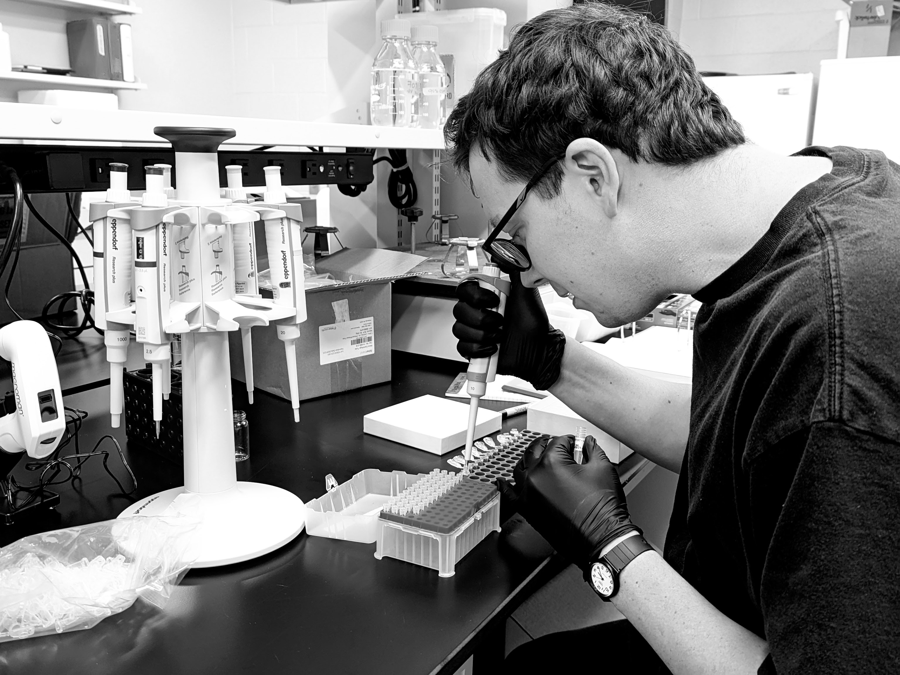
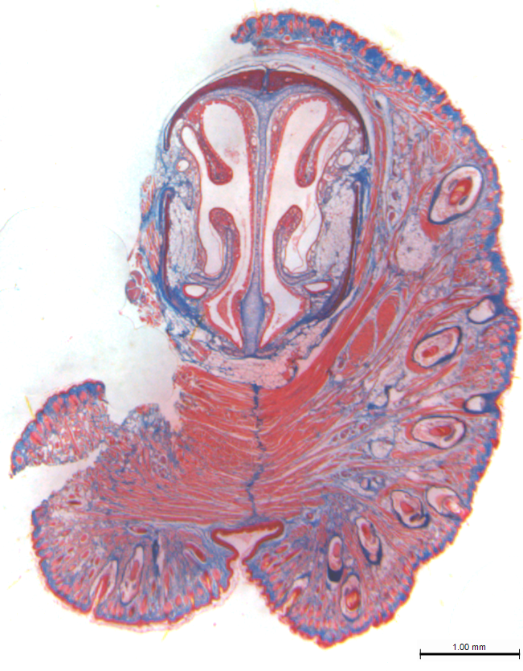
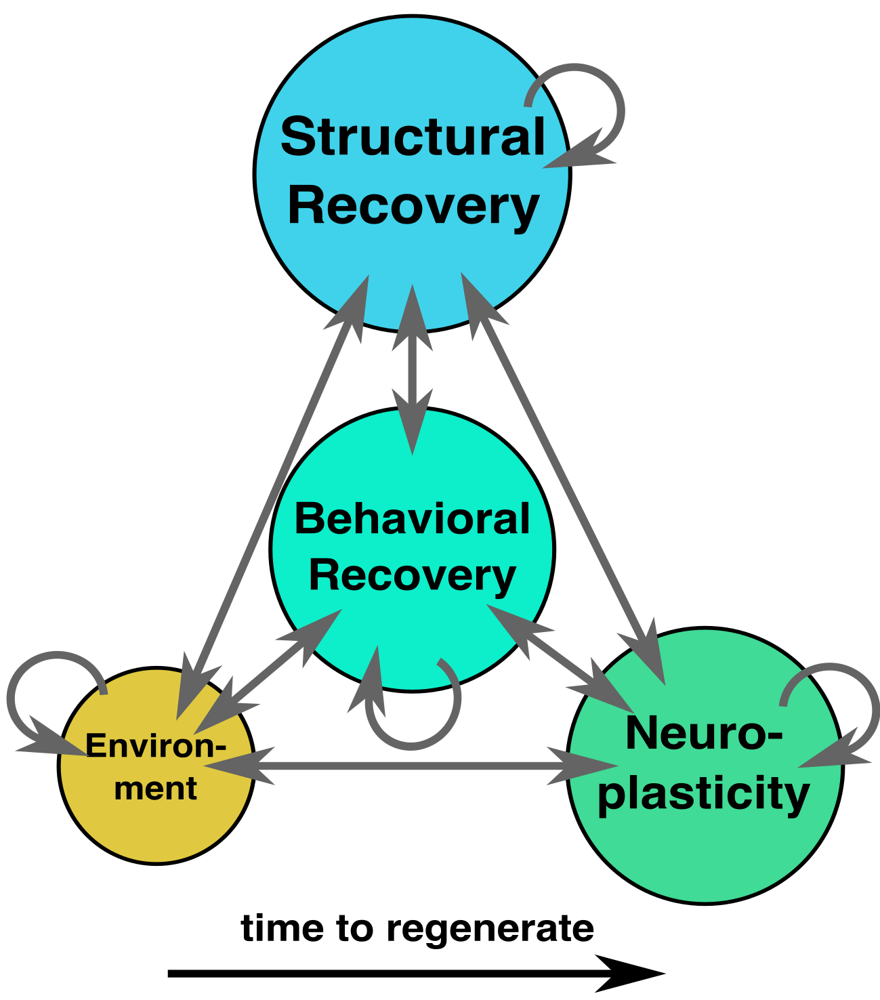

Decoding Repair. Restoring Function.
Regeneration research has shown that structure can return after injury. Whether function returns with it is a different question and largely unanswered.
About
The Varholick Lab studies functional reinnervation. We study how the nervous system regrows into organs, reconnects with the brain, and restores behavior. We use highly regenerative animals that solve this problem naturally.
Most research on tissue regeneration asks whether structure returns after injury. We ask whether function returns with it and whether the nervous system is the reason it does or does not. That distinction drives everything we do.
We are a team of curious problem-solvers working across histology, behavioral neuroscience, and physiology. Whether you are an undergraduate looking for your first research experience or a collaborator with a new perspective, we believe good science is a team sport.

Our Approach
From nature's best healers to therapies that restore function.
Know the Animal
Study the natural physiology and behavior of highly regenerative species — before injury, not just after.
Measure the Recovery
Measure the quality of recovery and ask whether it predicts the return of function.
Build the Therapy
Translate what regenerative animals do well into therapies for organ and tissue transplant in humans.
Research
Know the Animal
Before we can understand recovery, we have to understand the animal. We study the natural physiology and behavior of highly regenerative species; investigating how they develop, move, and sense their environment before any injury occurs. Organs are not isolated structures. They are embedded in nervous systems that monitor them, regulate them, and integrate their signals into behavior. You cannot define restoration without first defining what full function looks like in an intact animal before injury.
Explore our models →Regeneration, Adaptation, or Both?
After injury, two things happen simultaneously: First the tissue regenerates, and then the animal adapts by rewiring its nervous system, redistributing sensation, and compensating for what it has lost. Both can restore function. But they are not the same thing. True recovery requires the nervous system to regrow into the organ and reconnect with the brain. We measure whether that actually happens and whether it predicts the return of behavior.
See the behavior link →Closing the Gap in Human Organ Repair
Transplanted organs and tissue are denervated by definition. Even when surgery succeeds, the nervous system rarely fully reconnects, and function remains incomplete. By studying how regenerative animals achieve full functional reinnervation from the organ to the brain, we aim to identify what drives successful reconnection and develop strategies to close that gap in human patients.
View our vision →Recent Publications

Spiny mice (Acomys) regenerate wounded whisker pad skin with whisker follicles, muscles, and targeted innervation.
Varholick, J.A., *Kondapaneni, R., Maden, M. (2025). npj Regenerative Medicine, 10:28
This is the first study to demonstrate that spiny mice can regenerate their whisker follicles and the associated structures after removal. Starting a new model system for studying cutaneous nerve regeneration.
PDF, DOI Link


Latest News & Updates
February 2026
High School Researcher Selected for Regeneron ISEF 2026
Rachel (Jaehyeon) Lee, a high school student from Walton High School in Marietta, GA, who worked in our lab over winter break, has been selected to present her research on planarian regeneration at Regeneron ISEF 2026 in Phoenix, Arizona. Congratulations, Rachel!
May 2026
Birla Carbon Scholar Selected for Summer Research
Sienna Bennett was selected as a Birla Carbon Scholar to work over the summer in the Varholick Lab on tissue regeneration research. Learn more.
May 2026
Third Grand Award at Regeneron International Science Fair
Jaehyeon (Rachel) Lee was awarded the Third Grand Award at the Regeneron International Science Fair for her outstanding research on planarian regeneration. Read the article.
January 2026
Recruiting MS Student for Fall 2026
The lab has open positions for research projects on tissue regeneration, behavioral neuroscience, and physiology in highly regenerative rodents, salamanders, and planarians. Students will have opportunities to incorporate laboratory, bioinformatic, and possibly field methods and work collaboratively with other lab members. Learn More
December 2025
Lab Awarded internal grants; PrePI and Mentor Protege
The Varholick Lab was awarded two internal grants. A $19k grant for "Unravelling synaptic resilience: neurobiological mechanisms of enhanced learning and memory in Acomys cahirinus." In collaboration with Dr. Vishnu Suppiramanian and Dr. Erica Holliday. The other is a $3.5k award to study "Exploring neuroanatomy and sensory innervation in polymorphic two-lined salamanders" with Dr. Todd Pierson and students Kellyn Gilligan and Ito Osayi.
Get in Touch
We're always open to collaborations, inquiries, and new talent. Reach out to us!
Email Us
Visit Us
Science Building, Room 360
Kennesaw State University
Dept. of Ecology, Evolution, and Organismal Biology
Kennesaw, Georgia